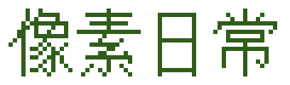

把日子过成一格一格的像素
—— 题记
关于
壹
项目
贰
博客
叁
相册
肆
留言板
伍
2026 年的博客骨架，穿着 2000 年的外壳。
二〇二六
GitHub
·
写信
·
复古入口
GitHub
·
写信
·
复古入口
关于
壹
项目
贰
博客
叁
相册
肆
留言板
伍
© 2026 像素日常
开站第
21
天 · 文章
0
篇 · 照片
0
张
归档
·
分享给朋友
·
我的账号
·
站长入口
本站地址：
https://pixel-daily-blog.app.workbuddy.host/
FASTEST VIEWED AT 800x600